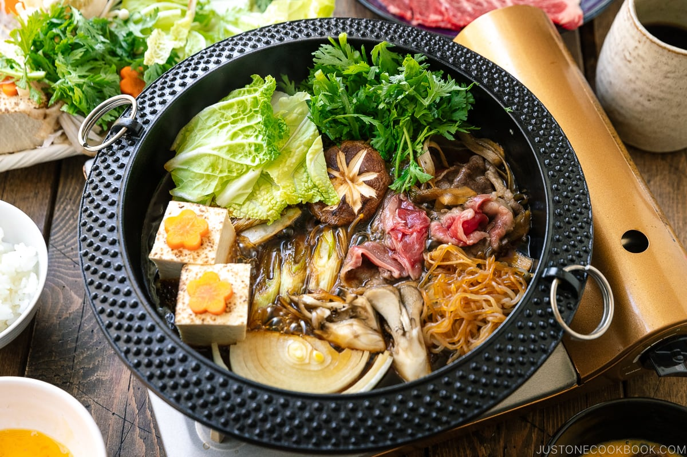
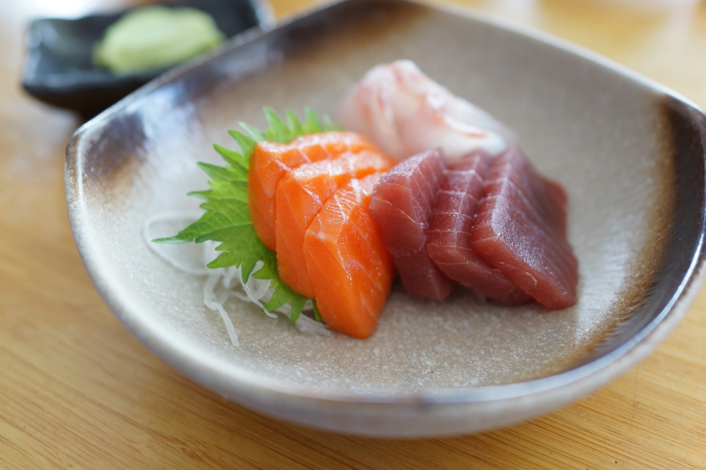
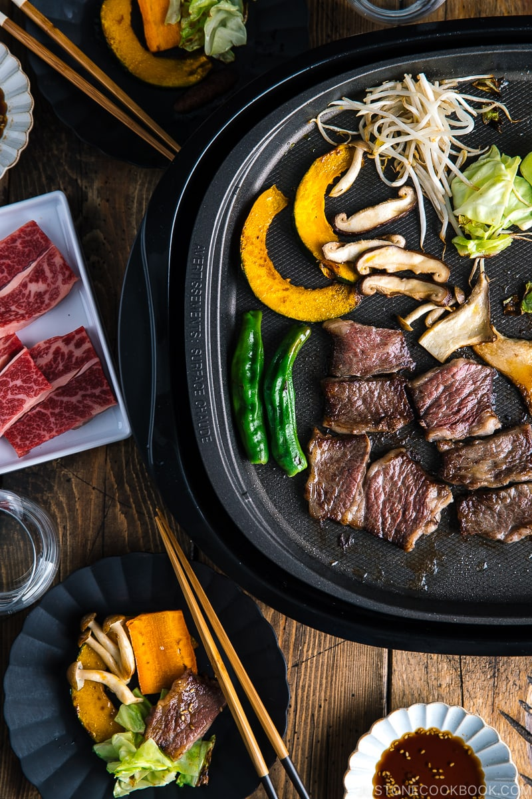
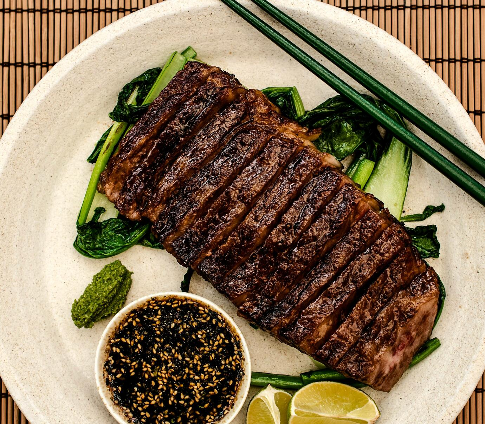
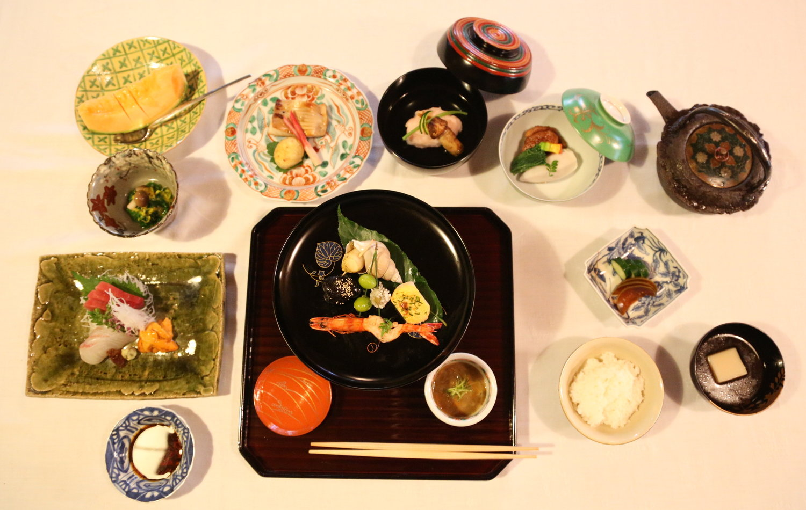

Sukiyaki

A hot pot dish with thinly sliced beef, tofu, vegetables, and noodles cooked in a sweet and savory soy-based broth.
Price:30$
Original price:50$
Sashimi

Fresh, thinly sliced raw fish or seafood served with soy sauce and wasabi.
Price:20$
Original price:40$
Shabu-Shabu

A hot pot dish where thinly sliced meat, vegetables, and tofu are cooked by briefly swishing them in a simmering broth.
Price:90$
Original price:120$
Teppanyaki

Grilled meats, seafood, and vegetables cooked on a large iron griddle right at the table.
Price:78$
Original price:98$
Chanko Nabe

A hearty hot pot dish originally eaten by sumo wrestlers, made with various ingredients such as meat, seafood, tofu, and vegetables.
Price:10$
Original price:20$
Okonomiyaki

As mentioned earlier, okonomiyaki can also be enjoyed as a dinner dish.
Price:50$
Original price:80$
Yakiniku

A Japanese-style barbecue where diners grill bite-sized pieces of meat and vegetables at the table
Price:60$
Original price:90$
Kaiseki Ryori

A multi-course meal that showcases the seasonal ingredients and culinary skills of the chef.
Price:30$
Original price:50$